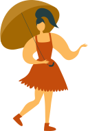
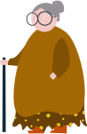
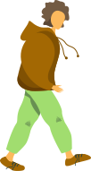

წინა დავალებებში უკვე შექმენი მუსიკალური კოლაჟი ქალაქში გასეირნების თემაზე. მაშინ შენ გამოიყენე რონდოს ფორმა. ახლა ჩვენი პერსონაჟი უბრალოდ სეირნობს. მას გზაზე სხვადასხვა შენობა ან სკვერი ხვდება. მოსეირნე ყველაფერს გვერდს უვლის და არსად ჩერდება. როგორ შეიძლება ამის მუსიკალურად გადმოცემა? ოსტინატოთი!
მოუსმინე რამდენიმე ფრაგმენტს, რომლებშიც ოსტინატოა გამოყენებული. დაახასიათე მოსეირნე, რომელსაც ოსტინატოში გამოყენებული მელოდია მოუხდებოდა. მოსასმენად დააჭირე ღილაკს.



